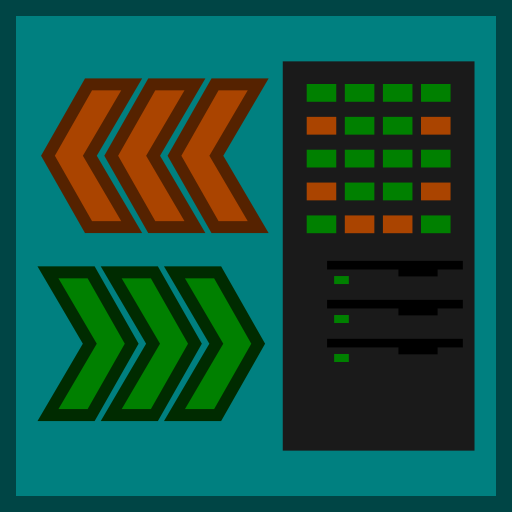

|
 |
| Descrizione |
|---|
| Consente il controllo esterno di FreeCAD a fini di automazione. Versione macro: 1.1 Ultima modifica: 30/10/2026 Versione FreeCAD: all Download: Media:Macro_server.svg Autore: Jjustra |
| Autore |
| Jjustra |
| Download |
| Media:Macro_server.svg |
| Link |
| Raccolta di macro Come installare le macro Personalizzare la toolbar |
| Versione macro |
| 1.1 |
| Data ultima modifica |
| 30/10/2026 |
| Versioni di FreeCAD |
| all |
| Scorciatoia |
| Nessuna |
| Vedere anche |
| Nessuno |
Strumento utile per l'automazione di FreeCAD. L'obiettivo è un programma piccolo, versatile e che agisca solo a livello superiore.
Gestione remota di FreeCAD, senza effettiva modifica del modello (per tale scopo, vedere Estensioni).
È necessario un client per inviare comandi a questo server. È inclusa una semplice utility da riga di comando in Python come implementazione di riferimento.
Ciò consente di selezionare a livello globale (ma comunque nello spazio del server e non in FreeCAD stesso):
Le operazioni successive potrebbero richiedere il documento/oggetto/foglio di calcolo/percorso
(la maggior parte di questi argomenti sono facoltativi)
per esempio:
(l'elenco di tutti i documenti viene restituito dal comando 'D')
Consente inoltre di ottenere un elenco di:
E si può anche:
Il server si avvia eseguendo una macro. Lo si arresta allo stesso modo. La macro, quindi, funge da semplice interruttore, mentre la vera magia avviene altrove.
Lo script client incluso accetta comandi sotto forma di argomenti da riga di comando. Ogni argomento corrisponde a un comando.
per esempio: ./freecad-ctl.py 'dMy_document_1' C '!B1 123' C
Questo seleziona My_document_1, restituisce tutti i valori delle celle nel foglio di calcolo predefinito, imposta la cella B1 su 123 e restituisce nuovamente tutti i valori.
Non dimenticare di impostare il percorso ROOT per i file stdin/stdout del server, sia nel client che nel server, prima di eseguirlo (variabile ROOT all'inizio di entrambi i codici sorgente). I file stdin/stdout verranno creati automaticamente.
Le informazioni vengono scambiate tramite due file. Dal punto di vista del server, uno è l'input, l'altro l'output. Dal punto di vista del client, l'input del server è il suo output e viceversa.
Ogni comando restituisce una risposta.
<one-letter-mod><name> <data string>
per esempio:
!B1 123
dove :
Questo imposta la cella B1 (nel documento e nel foglio di calcolo globali o attivi) al valore 123
I - ottiene l'ID del server
D - Ottiene l'elenco dei documenti aperti nel formato: d<documento>
O[<document>] - Ottiene l'elenco degli oggetti nel formato: o<oggetto> <etichetta>
C[<document>] [<spreadsheet>] - Ottiene l'elenco delle celle nel formato: c<cell-id> <value>
d<document> - seleziona documento
s[<document>] <spreadsheet> - seleziona foglio di calcolo
o[<document>] <object-name> - seleziona oggetto
p <file-path> - seleziona/imposta il percorso
@<cell-id> [<spreadsheet>] - Ottieni il valore della cella nel formato: c<cell-id> <value>
!<cell-id> <value> - imposta il valore della cella
r[<document>] - ricalcola documento
e[<object>] [<file-path>] - esporta oggetto selezionato
Seleziona il documento My_document_0
dMy_document_0
Ottiene l'elenco degli oggetti da My_document_1
OMy_document_1
Ottiene l'elenco degli oggetti da My_document_0
O
Deseleziona il documento
d
Ottiene l'elenco degli oggetti dal documento attivo di FreeCAD
O
Ottiene l'elenco delle celle dal foglio di calcolo predefinito in My_document_0
CMy_document_0
Ottiene l'elenco delle celle da My_spreadsheet in My_document_0
CMy_document_0 My_spreadsheet
Imposta il percorso
p /tmp/exported-part.stl
Esporta Object_0 nel percorso selezionato
eObject_0
Qualora fossero necessarie funzionalità aggiuntive, al di là delle capacità di questo server, sarà possibile implementarle facilmente.
Ogni comando deve restituire una risposta.
Macro_Server.FCMacro
## created on ##
# OS: Windows 10 build 19045
# Architecture: x86_64
# Version: 1.0.2.39319 (Git) Conda
# Build type: Release
# Branch: (HEAD detached at 1.0.2)
# Hash: 256fc7eff3379911ab5daf88e10182c509aa8052
# Python 3.11.13, Qt 5.15.15, Coin 4.0.3, Vtk 9.3.0, OCC 7.8.1
# Locale: Czech/Czech Republic (cs_CZ)
# Stylesheet/Theme/QtStyle: FreeCAD Dark.qss/FreeCAD Dark/Fusion
# Installed mods:
# * freecad.gears 1.3.0
# * sheetmetal 0.7.58
__Title__="server"
__Author__ = "Jjustra"
__Version__ = "1.1"
__Date__ = "2026-10-30"
__Comment__ = "This is the comment of the macro"
__Web__ = "https://forum.freecad.org"
__Wiki__ = "https://wiki.freecad.org/index.php?title=Macro_server"
__Icon__ = "/usr/lib/freecad/Mod/plugins/icons/server"
__IconW__ = "C:/Users/YourUserName/AppData/Roaming/FreeCAD"
__Help__ = "start the macro and run client"
__Status__ = "stable"
__Requires__ = "freecad all"
__Communication__ = "https://wiki.freecad.org/index.php?title=User:Jjustra"
import FreeCAD
# Location of the input/output files
ROOT = 'c:/tmp'
if 'server' not in dir(FreeCAD):
# Server not running - we will start it then
import os
from threading import Event,Thread
import Mesh
import time
## --- brcko lib start --- ##
import sys,os
stdin = []
stdinpos = []
stdout = []
def addstdin(path):
global stdin,stdinpos
if os.path.exists(path):
pos = os.path.getsize(path)
else:
pos = 0
stdin.append(path)
stdinpos.append(pos)
def addstdout(path):
global stdout
stdout.append(path)
def getstdin():
global stdin,stdinpos
data = []
for i,path in enumerate(stdin):
if not os.path.exists(path): continue
f = open(path)
f.seek(stdinpos[i])
_data = f.read()
f.close()
# Line-buffered
_i = _data.rfind('\n') + 1
_data = _data[:_i]
data.append(_data)
stdinpos[i] += _i
return data
def putstdout(data,i=0):
global stdout
if i >= len(stdout): return
path = stdout[i]
if path == '-':
sys.stdout.write(data)
else:
f = open(path,'a', encoding="utf-8", newline='\n')
f.write(data)
f.close()
## --- brcko lib end --- ##
_cb_d = {}
id = 0
path = ''
_id = 0
_doc = 0
_ss = 0
_obj = 0
_path = 0
## --- utils start --- ##
def getDoc(n=0):
'''Get document'''
global _doc
if n:
try:
doc = App.getDocument(n)
except NameError:
return 0
elif _doc:
doc = _doc
else:
doc = App.ActiveDocument
return doc
def getSS(s=0,n=0):
'''Get spreadsheet'''
global _ss
doc = getDoc(n)
if not doc: return 0
if s:
ss = doc.getObject(s)
elif _ss:
ss = _ss
else:
ss = doc.getObject('Spreadsheet')
return ss
def getObj(s=0,n=0):
'''Get object'''
global _obj
doc = getDoc(n)
if not doc: return 0
if s:
obj = doc.getObject(s)
elif _obj:
obj = _obj
else:
obj = doc.ActiveObject
return obj
def getPath(s=0, default_fn=0):
'''Get file path (for export mainly)'''
global _path,ROOT
path = ''
if not default_fn:
default_fn='file'
if s:
path = s
elif _path:
path = _path
else:
path = ROOT
path = path.replace('\\','/')# make it objectively right ;)
if os.path.isdir(path):
path = path + '/' + default_fn
if '.' not in path.split('/')[-1]:
path += '.stl'
return path
def dlgln(ln):
m = ''
n = ''
s = ''
m = ln[0]
ln = ln[1:]
if ln:
if ln[0] == ' ':
s = ln[1:]
else:
if ' ' in ln:
n,s = ln.split(' ',1)
else:
n = ln
return m,n,s
def register(m, fc):
'''Register command function with respective m-code'''
global _cb_d
_cb_d[m] = fc
## --- utils end --- ##
## --- thread function start --- ##
def _th(qe,id):
global _cb_d,_id
while not qe.is_set():
for data in getstdin():
for ln in data.split('\n'):
if not ln: continue
print('#D : server : got input :',ln)
m,n,s = dlgln(ln)
if m in _cb_d:
if not _id or _id == id or _cb_d[m] == fc_selectId:
# Only process commands if :
# id is empty
# id equals this instance's id
# we are about to execute selectId command
_cb_d[m](m,n,s)
time.sleep(.2)# seems to prevent FC crashes
else:
print('#E : server : unknown command :',m)
time.sleep(1)
## --- thread function end --- ##
## --- stdlib start --- ##
def fc_getId(m,n,s):
resp = 'i%s\n' % FreeCAD.server[0]
#resp += '#I : server : fc_getId : done\n'
putstdout(resp)
def fc_docList(m,n,s):
resp = ''
for k,_ in App.listDocuments().items():
resp += 'd%s\n' % k
if not resp:
resp += '#I : server : fc_docList : empty\n'
putstdout(resp)
def fc_objList(m,n,s):
resp = ''
doc = getDoc(n)
if not doc:
resp += '#E : server : fc_objList : no doc\n'
else:
for obj in doc.Objects:
resp += 'o%s %s\n' % (obj.Name, obj.Label)
if not resp:
resp += '#I : server : fc_objList : empty\n'
putstdout(resp)
def fc_cellsList(m,n,s):
resp = ''
ss = getSS(s,n)
if not ss:
resp += '#E : server : fc_cellsList : no sheet\n'
else:
# Build list of non-empty cells
for k in ss.getNonEmptyCells():
v = ss.get(k)
resp += 'c%s %s\n' % (k,v)
if not resp:
resp += '#I : server : fc_cellsList : empty\n'
# Sends it
putstdout(resp)
def fc_selectId(m,n,s):
global _id
_id = n
putstdout('#I : server : fc_selectId : done\n')
def fc_selectDoc(m,n,s):
global _doc
resp = ''
if n:
try:
_doc = App.getDocument(n)
except NameError:
resp = '#E : server : fc_selectDoc : no doc\n'
else:
_doc = 0
if not resp:
resp = '#I : server : fc_selectDoc : done\n'
putstdout(resp)
def fc_selectSpreadsheet(m,n,s):
global _ss
resp = ''
doc = getDoc(n)
if not doc:
resp += '#E : server : fc_selectSpreadsheet : no doc\n'
else:
if s:
_ss = doc.getObject(s)
else:
_ss = 0
resp = '#I : server : fc_selectSpreadsheet : done\n'
putstdout(resp)
def fc_selectObj(m,n,s):
global _obj
resp = ''
doc = getDoc(n)
if not doc:
resp += '#E : server : fc_selectObj : no doc\n'
else:
if s:
_obj = doc.getObject(s)
else:
_obj = 0
if not resp:
resp = '#I : server : fc_selectObj : done\n'
putstdout(resp)
def fc_selectPath(m,n,s):
global _path
if s:
_path = s
else:
_path = 0
putstdout('#I : server : fc_selectPath : done\n')
def fc_getCell(m,n,s):
resp = ''
ss = getSS(s)
if not ss:
resp = '#E : server : fc_getCell : no sheet\n'
else:
try:
v = ss.get(n)
resp = 'c%s %d\n' % (n, v)
except ValueError:
resp = '#E : server : fc_getCell : no cell\n'
#resp += '#I : server : fc_getCell : done\n'
putstdout(resp)
def fc_setCell(m,n,s):
resp = ''
ss = getSS()
if not ss:
resp = '#E : server : fc_setCell : no sheet\n'
else:
v = ss.set(n,s)
resp = '#I : server : fc_setCell : done\n'
putstdout(resp)
def fc_recompute(m,n,s):
getDoc(n).recompute()
putstdout('#I : server : fc_recompute : done\n')
def fc_export(m,n,s):
resp = ''
obj = getObj(n)
path = getPath(s, obj.Label)
if not obj:
resp = '#E : server : fc_export : no object\n'
else:
if not path:
resp = '#E : server : fc_export : no path\n'
else:
if hasattr(Mesh, "exportOptions"):
options = Mesh.exportOptions(path)
Mesh.export([obj], path, options)
else:
Mesh.export([obj], path)
resp += '#I : server : fc_export : done : %s\n' % path
putstdout(resp)
def fc_(m,n,s):
resp = ''
putstdout(resp)
def fc_(m,n,s):
resp = ''
putstdout(resp)
def fc_(m,n,s):
resp = ''
putstdout(resp)
## --- stdlib end --- ##
## --- Extensions start --- ##
## --- Extensions end --- ##
# Register all command functions with their codes
register('I', fc_getId)
register('D', fc_docList)
register('O', fc_objList)
register('C', fc_cellsList)
register('i', fc_selectId)
register('d', fc_selectDoc)
register('s', fc_selectSpreadsheet)
register('o', fc_selectObj)
register('p', fc_selectPath)
register('@', fc_getCell)
register('!', fc_setCell)
register('r', fc_recompute)
register('e', fc_export)
#register('', fc_)
## --- Extensions registration start --- ##
#register('', fc_)
## --- Extensions registration end --- ##
# Setup brcko lib
path = os.path.abspath(ROOT)
# in <-> in
# out <-> out
addstdin('%s/server.stdin' %path)
addstdout('%s/server.stdout' %path)
# Little bit of flexing O:)
genid = lambda seed,lvl: 'QWERTYUIOPASDFGHJKLZXCVBNM'[seed%26]+genid((seed*12345)%56789,lvl-1) if lvl>0 else ''
id = genid(int(time.time()*1000),8)
qe = Event()
th = Thread(target=_th,args=(qe,id))
FreeCAD.server = (id,qe,th)
th.start()
print('#I : server : started :',id)
else:
# Server is running - let's stop it now
(id,qe,th) = FreeCAD.server
qe.set()
del(FreeCAD.server)
print('#I : server : stopped')
freecad-ctl.py
#!/usr/bin/python3
import os
import time
# Location of the input/output files
ROOT = 'c:/tmp'
## --- brcko lib start --- ##
import sys,os
stdin = []
stdinpos = []
stdout = []
def addstdin(path):
global stdin,stdinpos
if os.path.exists(path):
pos = os.path.getsize(path)
else:
pos = 0
stdin.append(path)
stdinpos.append(pos)
def addstdout(path):
global stdout
stdout.append(path)
def getstdin():
global stdin,stdinpos
data = []
for i,path in enumerate(stdin):
if not os.path.exists(path): continue
f = open(path)
f.seek(stdinpos[i])
_data = f.read()
f.close()
# Line-buffered
_i = _data.rfind('\n') + 1
_data = _data[:_i]
data.append(_data)
stdinpos[i] += _i
return data
def putstdout(data,i=0):
global stdout
if i >= len(stdout): return
path = stdout[i]
if path == '-':
sys.stdout.write(data)
else:
f = open(path,'a', encoding="utf-8", newline='\n')
f.write(data)
f.close()
## --- brcko lib end --- ##
# Process command line arguments
cmd = ''
if len(sys.argv) > 1:
# Use command line arguments to build command script
for a in sys.argv[1:]:
if a == '-':
# Read list of commands from (real) stdin
cmd += sys.stdin.read().replace('\r','\n')
else:
cmd += a
cmd += '\n'
#else:
# Default : get document list
# cmd = 'D\n'
# Setup brcko lib
path = os.path.abspath(ROOT)
# in <-> out
# out <-> in
addstdin('%s/server.stdout' %path)
addstdout('%s/server.stdin' %path)
# Send command script
if cmd:
putstdout(cmd)
try:
# Wait for response (indicated by file size change / file creation)
if not os.path.exists(stdin[0]):
while not os.path.exists(stdin[0]):
time.sleep(.1)
else:
sz = os.path.getsize(stdin[0])
while sz == os.path.getsize(stdin[0]):
time.sleep(.1)
# Just to be sure write ended
time.sleep(.5)
except KeyboardInterrupt:
sys.exit()
# Print response
for data in getstdin():
print(data)